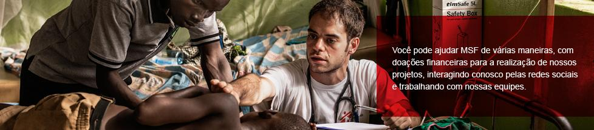
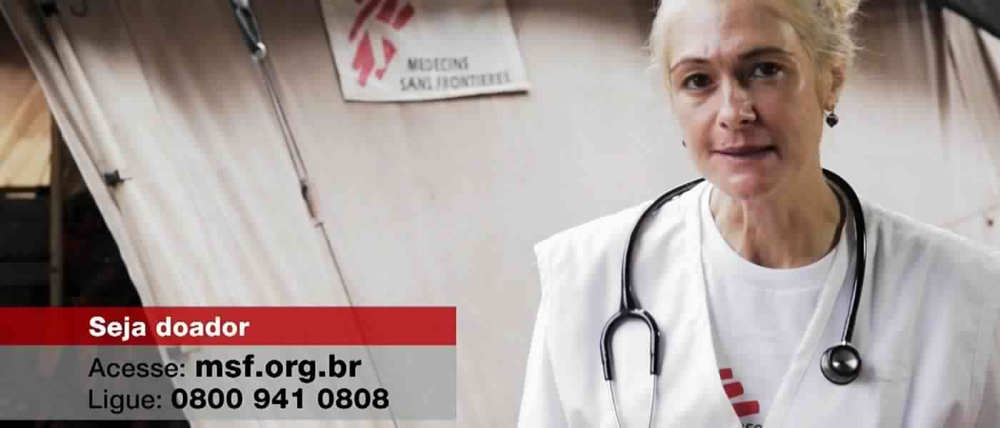
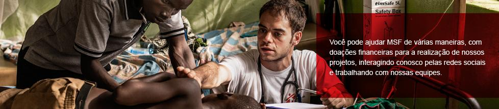
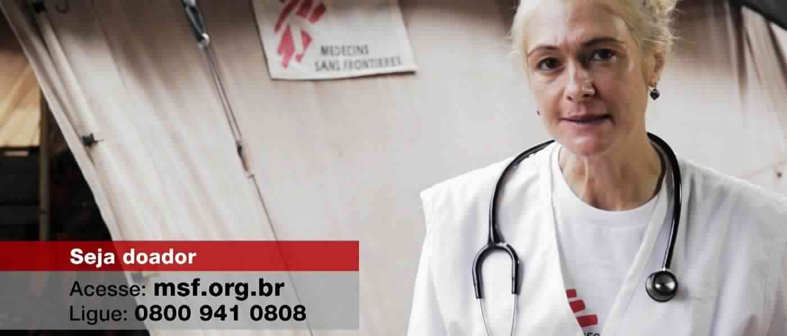

Hold on: o comercial de Médicos Sem Fronteiras que quebrou regras e se tornou sucesso de captação
06 de Agosto de 2018 às 10:00
Uma canção marcante ilustrada por imagens reais. Foi com essa receita, aparentemente simples, que Médico Sem Fronteiras conseguiu emplacar o comercial mais bem-sucedido da história da organização no Brasil. Mas um detalhe torna o case ainda mais interessante: a peça publicitária subverte totalmente as regras da chamada Direct Response Television (DRTV), técnica de captação com propagandas de TV.
“O DRTV pressupõe coisas como uma locução que conte uma história, a apresentação de algum personagem, famoso ou não, e um call to action falado, forte. Nosso filme não tem nada disso. É apenas uma música sobre imagens, com legendas, e o chamado para a doação só aparece discretamente no final”, conta Flavia Tenenbaum, diretora de captação de Médicos Sem Fronteiras.
A ideia do comercial — popularmente conhecido como “Hold On”, por causa de sua trilha, um cover da canção “Everybody Hurts (Hold on)”, da banda R.E.M —, surgiu após uma reunião internacional da organização, em 2011. “O escritório da Noruega apresentou um vídeo de sete minutos com a música. Era o material que eles utilizavam com grandes doadores. Achei lindo e quis levar para o Brasil”, lembra a diretora de captação.
Flavia sabia que, por quebrar regras, a aposta encontraria resistência, mas decidiu bancá-la. “Algumas pessoas diziam que não era DRTV, que daria para aproveitar as imagens, porém, fazendo outra coisa. Mas eu queria aquilo, e o diretor de criação da agência de publicidade que é nossa parceira topou.”
Passado o desafio de transformar um filme de sete minutos em um comercial de dois e ainda sincronizar música com imagens, chegou o momento de verificar o resultado na prática. A primeira veiculação aconteceu naquele mesmo ano.
“Na época, estávamos com uma campanha apresentada pelo ator Thiago Lacerda no ar. Ela foi usada como filme padrão para comparar com o vídeo novo. O desempenho se mostrou ok. Muitas vezes, ficou abaixo do da campanha anterior. Mas, de repente, a nova campanha engrenou e superou a peça com o Thiago. E nenhuma outra a ultrapassou até agora”, comemora.
Apesar de não abrir todos os resultados da campanha, ela conta que o vídeo já chegou a gerar mais de 20 doadores em uma só inserção. “Tem gente que nos liga chorando depois assisti-lo”, revela.
A diretora de captação diz que a organização ainda não pesquisou os motivos que levaram a peça publicitária a cair de maneira tão contundente no gosto do público, mas arrisca um palpite: “O brasileiro é muito emotivo. Creio que a música funciona como uma narração, mexe com o sentimento das pessoas”.
Na avaliação dela, não existirá outra campanha como essa nem para Médico Sem Fronteiras, nem para qualquer outra organização. “Cada instituição precisa achar o seu ‘Hold on’. Não é só trocar personagens.”
Além de subverter as regras de DRTV, a peça chama a atenção pela longevidade: são praticamente sete anos no ar. Em geral, diz Flavia, o tempo de veiculação de um comercial do tipo fica em torno de dois anos — “Depois, cansa”. Mas até quando “Hold on” será exibido na TV? “Enquanto estiver dando resultado”, diz sua idealizadora.


“O DRTV pressupõe coisas como uma locução que conte uma história, a apresentação de algum personagem, famoso ou não, e um call to action falado, forte. Nosso filme não tem nada disso. É apenas uma música sobre imagens, com legendas, e o chamado para a doação só aparece discretamente no final”, conta Flavia Tenenbaum, diretora de captação de Médicos Sem Fronteiras.
A ideia do comercial — popularmente conhecido como “Hold On”, por causa de sua trilha, um cover da canção “Everybody Hurts (Hold on)”, da banda R.E.M —, surgiu após uma reunião internacional da organização, em 2011. “O escritório da Noruega apresentou um vídeo de sete minutos com a música. Era o material que eles utilizavam com grandes doadores. Achei lindo e quis levar para o Brasil”, lembra a diretora de captação.
Flavia sabia que, por quebrar regras, a aposta encontraria resistência, mas decidiu bancá-la. “Algumas pessoas diziam que não era DRTV, que daria para aproveitar as imagens, porém, fazendo outra coisa. Mas eu queria aquilo, e o diretor de criação da agência de publicidade que é nossa parceira topou.”
Passado o desafio de transformar um filme de sete minutos em um comercial de dois e ainda sincronizar música com imagens, chegou o momento de verificar o resultado na prática. A primeira veiculação aconteceu naquele mesmo ano.
“Na época, estávamos com uma campanha apresentada pelo ator Thiago Lacerda no ar. Ela foi usada como filme padrão para comparar com o vídeo novo. O desempenho se mostrou ok. Muitas vezes, ficou abaixo do da campanha anterior. Mas, de repente, a nova campanha engrenou e superou a peça com o Thiago. E nenhuma outra a ultrapassou até agora”, comemora.
Apesar de não abrir todos os resultados da campanha, ela conta que o vídeo já chegou a gerar mais de 20 doadores em uma só inserção. “Tem gente que nos liga chorando depois assisti-lo”, revela.
A diretora de captação diz que a organização ainda não pesquisou os motivos que levaram a peça publicitária a cair de maneira tão contundente no gosto do público, mas arrisca um palpite: “O brasileiro é muito emotivo. Creio que a música funciona como uma narração, mexe com o sentimento das pessoas”.
Na avaliação dela, não existirá outra campanha como essa nem para Médico Sem Fronteiras, nem para qualquer outra organização. “Cada instituição precisa achar o seu ‘Hold on’. Não é só trocar personagens.”
Além de subverter as regras de DRTV, a peça chama a atenção pela longevidade: são praticamente sete anos no ar. Em geral, diz Flavia, o tempo de veiculação de um comercial do tipo fica em torno de dois anos — “Depois, cansa”. Mas até quando “Hold on” será exibido na TV? “Enquanto estiver dando resultado”, diz sua idealizadora.


Notícias mais populares
Gestão
Em agosto de 2017, a revista ÉPOCA e o Instituto Doar divulgaram a primeira ediç&...
Contexto e tendências
Criado para tornar mais transparentes as parcerias entre a administração públic...
Profissional captador
A captação de recursos é fundamental para a sustentabilidade de uma organiza&cc...